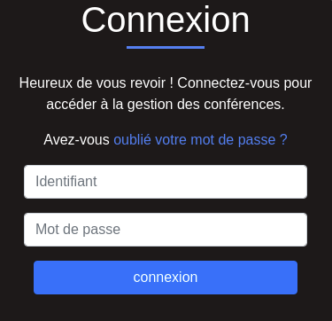
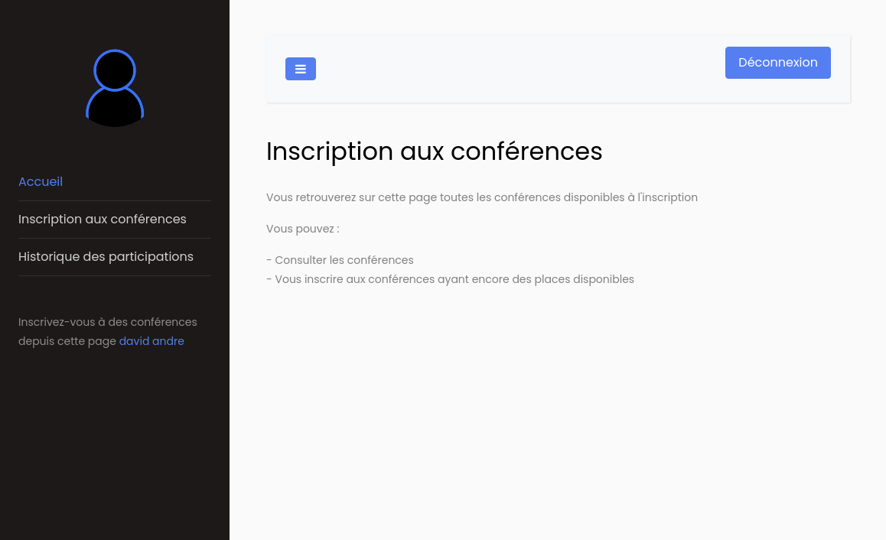
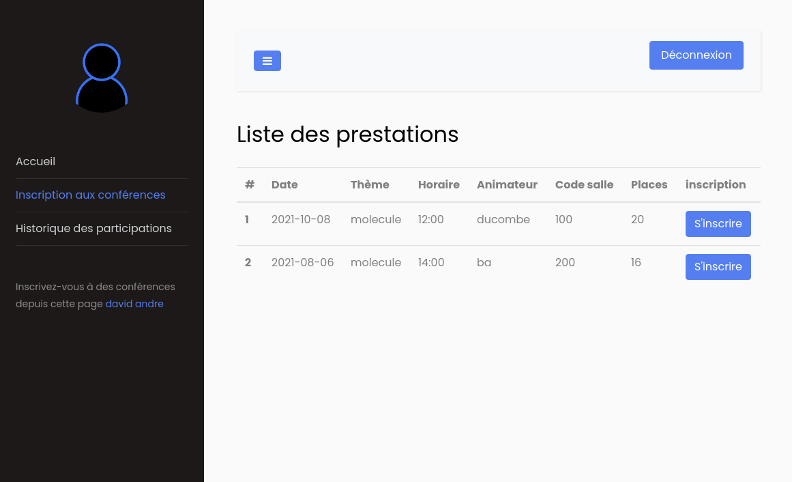
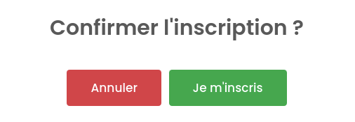
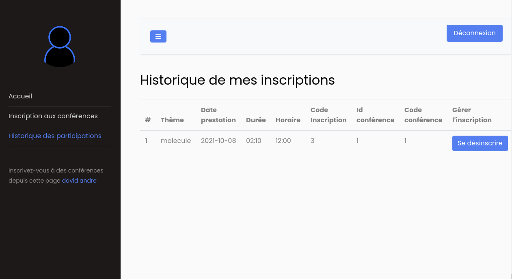
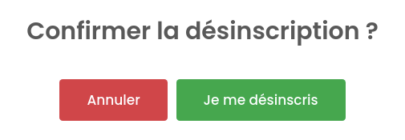
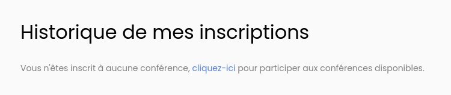
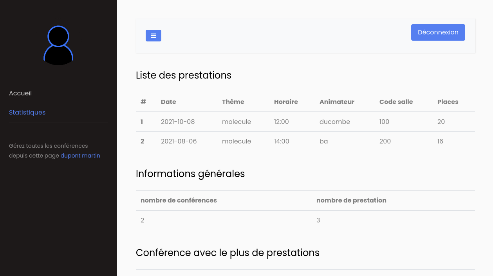
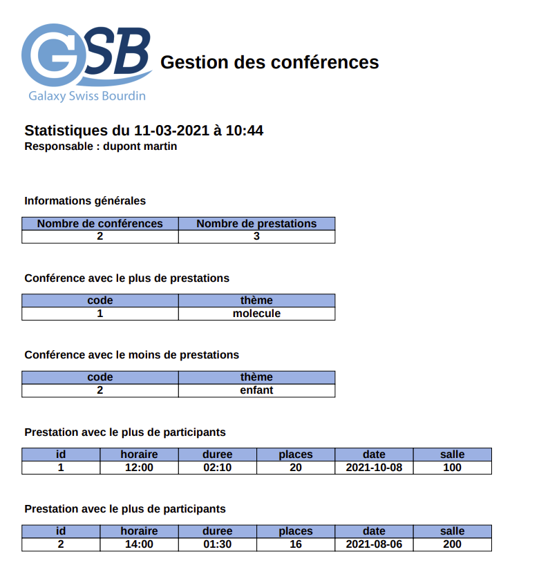

Ce projet a été réalisé durant ma deuxième année de BTS SIO. C'est une application web développée en PHP à l'aide du framework CodeIgniter et accessible après authentification.
L'objectif principal du projet est de donner la possibilité aux visiteurs de s'inscrire à des conférences, depuis l'interface web. Le responsable, quant à lui, est en charge d'établir les statistiques liées aux conférences.
Les langages utilisés sont :
- PHP
- SQL
- HTML/CSS
- JavaScript/jQuery
L'organisation du code de notre projet est basée sur l’architecture MVC (Model-View-Controller). Cette dernière a pour objectif de bien organiser et structurer son code source. Elle consiste à distinguer trois entités différentes qui sont le Modèle, la Vue et le Contrôleur, chacun ayant un rôle bien précis dans l’interface.
Quelques images de l'application web...
Page d'authentification
C'est à travers ce formulaire de connexion que s'identifient les visiteurs et le responsable de l'application.
Page d'accueil du visiteur
Après la connexion du visiteur, il arrive sur sa page d'accueil lui indiquant ce qu’il va pouvoir retrouver sur son compte. Sur le menu latéral gauche se trouve la barre de navigation, permettant d'accéder aux différentes fonctionnalités disponibles.
Inscription aux conférences
Pour s’inscrire à une conférence, le visiteur doit se rendre dans le menu latéral gauche et cliquer sur “Inscription aux conférences”. A partir de là, le visiteur peut choisir sa conférence en cliquant sur le bouton “S’inscrire”.
Un modal sera dès lors affiché et le visiteur devra cliquer sur le bouton “Je m’inscris” pour confirmer son inscription à la conférence.
Historique des inscriptions
En se rendant sur l’onglet “Historique des participations”, le visiteur peut se désinscrire d’une conférence auquelle il s’est au préalable inscrit.
Modal de confirmation de désinscription
Si l’historique des inscriptions est vide, un message est affiché au visiteur pour lui proposer de s’inscrire aux conférences disponibles.
Etablir les statistiques
Lors de la connexion du responsable, il arrive sur une page d'accueil lui indiquant ce qu’il va pouvoir retrouver sur son compte. Sur le menu latéral gauche se trouve un second menu qui permet d’accéder à la page des statistiques.
Exportation des statistiques sous forme de PDF (pour le responsable)
Le responsables peut également décider de générer un fichier PDF, récapitulatif de toutes les statistiques. Pour cela, il doit simplement cliquer sur le bouton “Générer un PDF”. Un nouvel onglet sera alors ouvert. Voici un exemple de fichier PDF généré. On retrouve, en plus des statistiques, la date et l'heure à laquelle le fichier été généré ainsi que le nom du responsable.
Notre projet s’est bien déroulé. Nous avons bien réparti les différentes tâches ainsi que le travail à faire. Nous sommes restés en contact et nous avons réalisé un git commun pour pouvoir continuer à travailler en collaboration. De ce fait, il était plus simple de réunir les avancées de chacun et de rassembler les morceaux de codes. L’application Web nous paraît complète et simple d'utilisation (grâce au respect des normes UI/UX) et tout ce que nous voulions faire a été fait dans les temps. Pour finir, ce projet a été une bonne solution pour approfondir les notions de PHP et découvrir un framework léger et puissant. Ce que j'ai aimé dans ce projet, c'est découvrir un framework libre en PHP. Je pense qu'il nous a davantage aidé à respecter l'architecture MVC de notre projet, grace aux dossiers et sous-dossiers déjà créés. J'ai également trouvé la documentation de CodeIgniter bien faite et compréhensible.